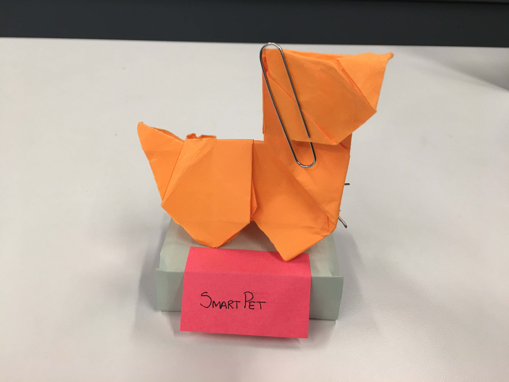
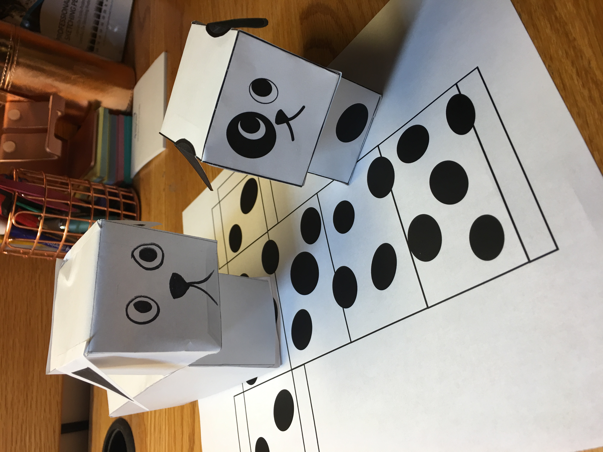
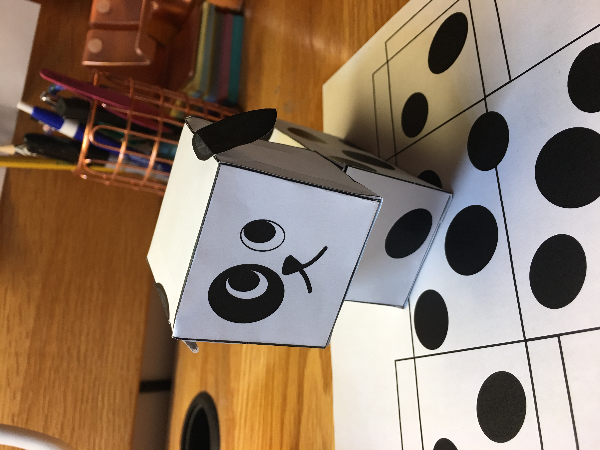
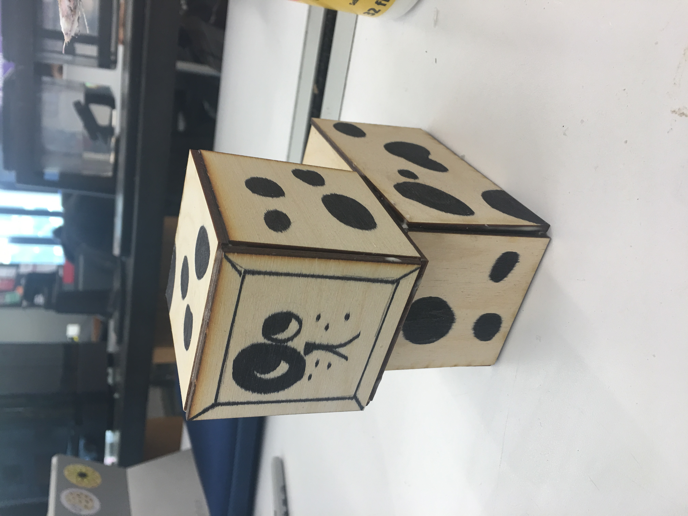
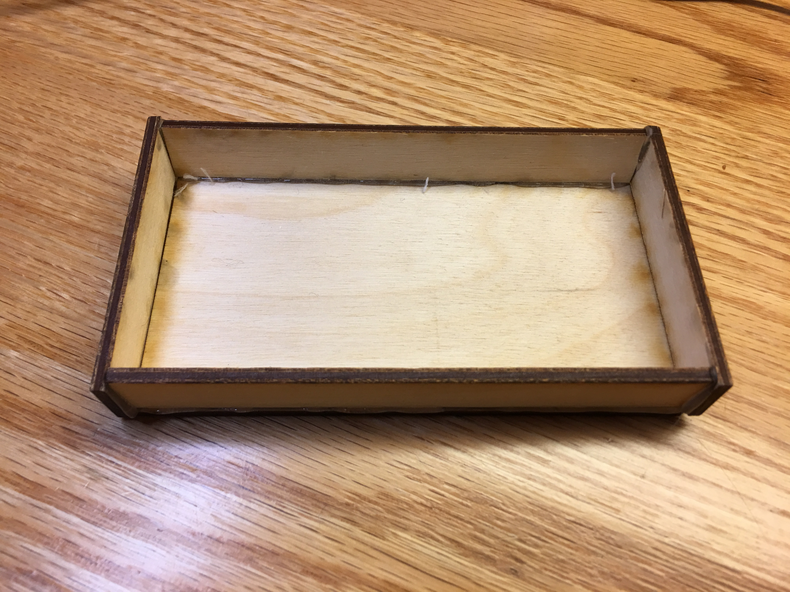
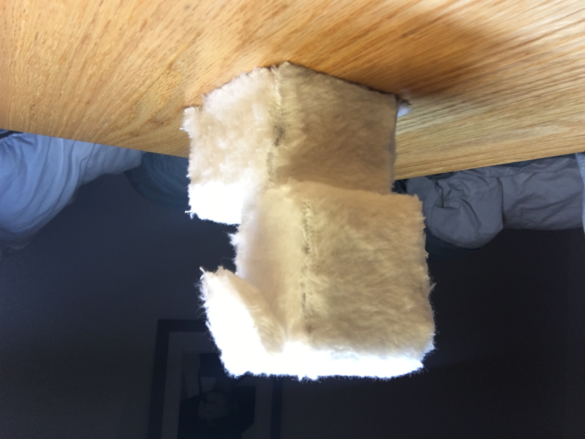
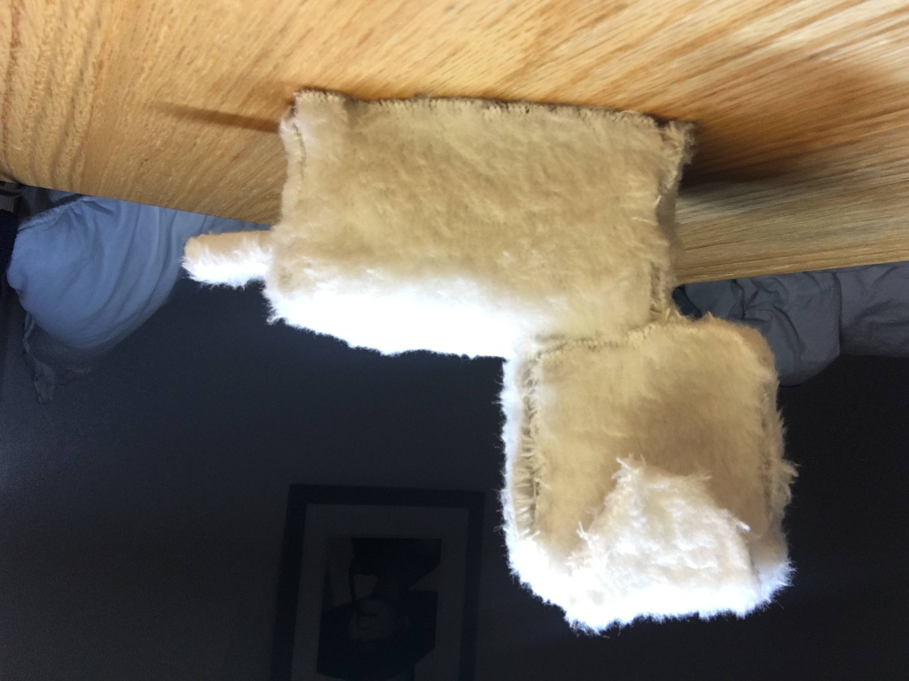
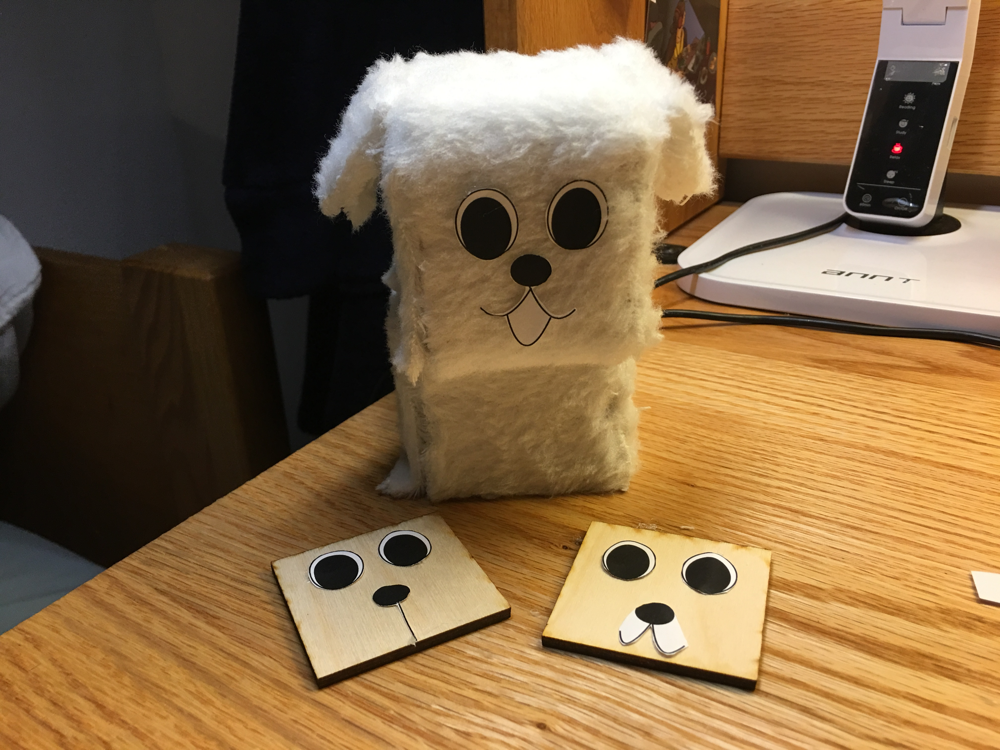
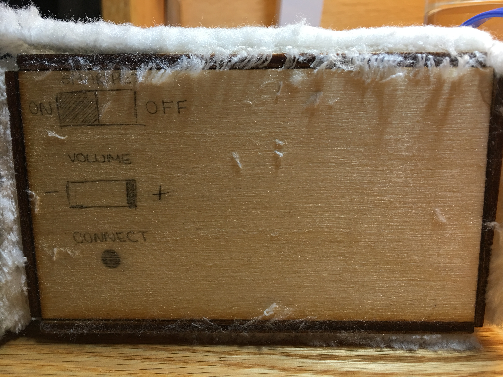
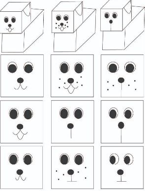

Smar+ Pet
Prompt: Design for the future. Think a product that could be sold in the future and what are it's consequences in its hypothetical world.
Smar+Pet is a company focused on extending the emotional support that animals can provide to people that don't have the time to take care of an actual pet. Smar+Pets are electronic pets that keep track of their owner's daily routine, making sure that they are mentally healthy and meeting their daily goals.

Skills Used
- Illustrator
- InDesign
- Photoshop
- Lightroom
- Laser Cutting
Frankenbuild
I decided to make an origami dog because originally, my intention was for the dog to look like it would be able to move.
Since it would be an electronic dog, I made a “charging bed” out of a box.
The paper clips represent the moving ears and the pieces of metal coming out of the front paws represent that the front paws would be able to extend.
Cons:
Paper Prototype
 Week one I decided to focus on getting the size of the dog right and to think about how the dog could look like.
I tried drawing the dog on paper (lower left) but it didn’t look right, so I decided to draw a printable dog on illustrator.
Pros:
Cons:
Wooden Prototype
 During week two I focus on the actual structure of the dog.
I went to the MakerSpace and I used the laser cutter to make the printable dog that I drew last week, but out of wood.
I drew the dalmatian spots and made the face of the dog a screen to represent that it would change expressions.
Pros:
Cons:
Final Prototype
   I bought a fabric that felt really nice and fluffy. Both sides of the fabric felt different, so after asking the class which one they liked better and experimenting gluing both sides on wood, I decided on one and covered the entire wooden dog with it.
To make the ears, I turned the fabric around so that the nicer side would be underneath.
It took me a while to get the ears and the tail so stay glued to the dog and cutting the fabric was really difficult because it is too thick and it sheds a lot.
I decided to go back to the MakerSpace to laser cut the dog again. I used a different kind of glue to put it together and the dog turned out a lot stronger.
I made the dog smaller (it’s now the size of the paper one).
The ears and the tails have wires in them so that they can actually be moved and hold their position.
Instead if wrapping the entire dog with the fabric, I wrapped each part with fabric so that less wood would show up.
I didn't want to glue the face on the dog because I wanted the expression to change. I tried projecting faces on the dog, but that didn't work so I drew the faces on pieces of fabric, but since the fabric was fluffy, it looked really ugly (+ I ruined a few pens doing that). At the end I decided to print out the faces just so that people could have an idea of how the faces would look like on the dog.
I drew buttons on the bottom to show how you would be able to turn it on/off, change the volume and connect to new devices. You’d connect the dog to your devices using bluetooth. You’d press the round button underneath the dog until the name of your pet shows up on your device.
Pros: